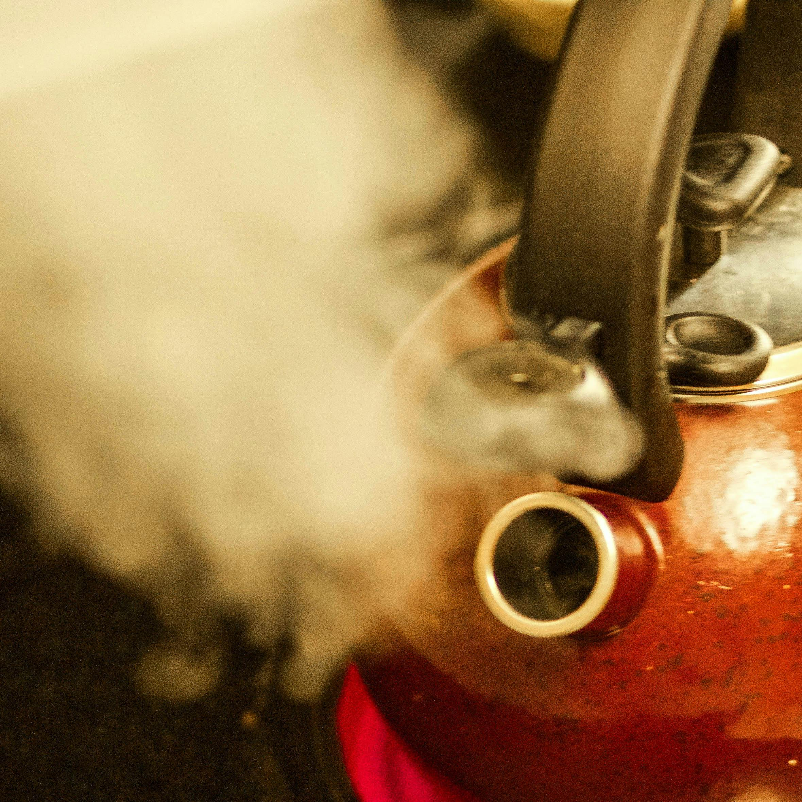

How To Make The Perfect Cup Of Coffee Using A French Press
In order to make this coffee, you will need a french press machine.

Step 1: Bring water to a boil using a kettle.
Step 2: Grind the coffee beans into a consistency such as breadcrumbs. Adding it into the french press.
Step 3: When water reaches 200°F, add to the french press, stirring it vigorously for around 4 minutes. After slowly plunge the press to seperate the coffee from the coffee grounds.

Step 4: You can now serve the coffee, but if you have made extra or do not plan on drinking all of it, removing it from the press will stop the coffee from becoming bitter.